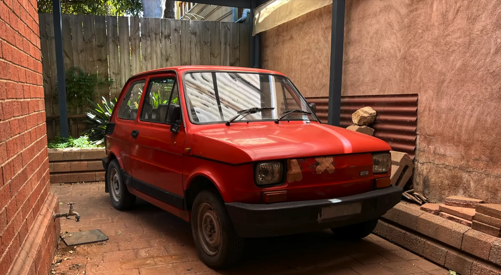

Welcome to Marco Site
What is this about?
Here a lot o things that I want to put. You'll have pieces that I'm practicing, pieces that I already know, recordings of my music and some blog stuff that I want to post. Most of the things won't be very interesting.
Most of the time this will be empty, but maybe we will have some projects that I've done and things along those lines
What to expect?
Don't expect a lot of great things, because there won't be a lot, but to heck if I'm not trying, at least.
Sometimes things will be interesting, like some thoughts, feelings and things along those lines. Otherwise, it'll be a heck of a lot of nothing, but it's my heck of lot of nothing.
Type of piano
The piano that I currently use is a Casio PX-870. Not the best, not the worst, not the best either
.Pieces that I've learned
Here are some pieces that I've learned along my 8 years journey in to the piano. It isn't a very good for the time I've playing, but It's honest work.
| Piece | Composer | Date Started | Date Learned |
|---|---|---|---|
| Sonata Op. 13 No.8 Mov 1 | Ludwig Von Beethoven | 10/10/2021 | 20/12/2021 |
| Prelude Op. 28 No. 15 | Frederick Chopin | 01/02/2022 | 13/03/2022 |
| Andante con moto Op. 19b No. 1 | Felix Mendelssohn | 04/08/2025 | 12/09/2025 |
| Bachinas Brasileiras No.4, Coral | Heitor Villa-Lobos | 02/04/2025 | 10/06/2025 |
Why so slow?
I am really slow, and don't have much time to practice. So my progress is really slow, but my aim isn't to be a concert pianist, I am a hobbyst and as such, the real metric for my hapiness is myself. I'm happy, so that's what matter.
Nuggets That I like
In no order we have nuggets like:- Tony Kowalski
- The Goober
- The beatle
- Fiat 500

Some nuggets are more loved than others
If you see in in this absolute gem of a channel, that nuggets like Tony only recieve abuses, but Tony is strong, Tony survived everything.